HEALTH
URGENT:
By Elise Swanson
Updated 30 minutes ago -
By Elise Swanson
Updated 30 minutes ago -
Samantha Anderson
I started taking the recipe you prepared for me. I've been taking it for 15 consecutive days, I've lost 16 pounds and reduced my waist by 10 cm. I'll keep taking it, it's delicious. 😍
Ashley Thompson
FINALLY, SOMEONE WHO DOESN'T BEAT AROUND THE BUSH TO ASK FOR MONEY IN THE END, THANK YOU ELISE, WONDERFUL ❤
Jennifer Davis
You explain very well, it's what we, the laypeople, need. I'm going to start using this trick today itself.
Jessi Martinez
I've been doing this trick for 17 days, on the scale I've only lost 23 lbs, but with the tape measure even I was surprised, I lost 9 centimeters. I loved it!❤❤❤
Emily Johnson
Very well explained and straightforward video, no beating around the bush, congratulations Elise 😍
Lauren Brown
Elise,You have helped me a lot. A few years ago, I went through the worst moment of my life, I began to pray, read the Bible, and found this video, what a blessing. I've been doing this trick for 5 days now and already feel like another person, more willing, with more desire to live, and I've already lost about 6.6 lbs.
This post is no longer receiving comments!